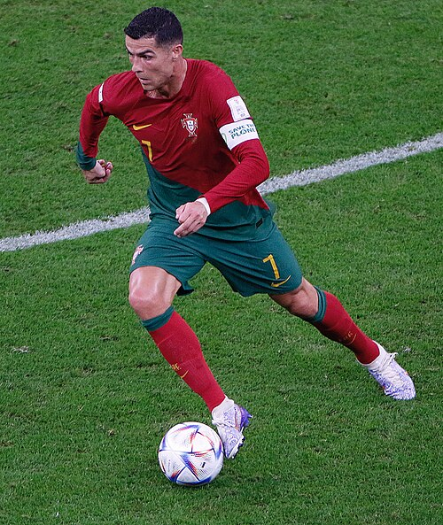
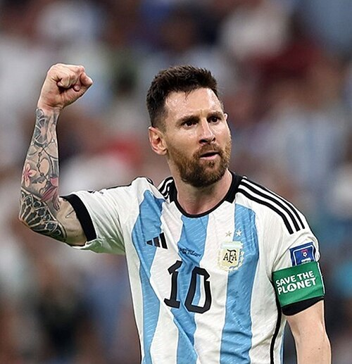
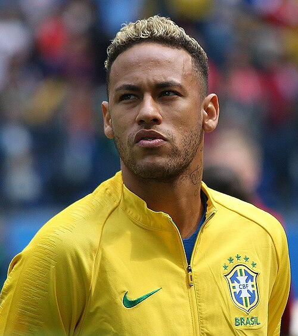

|
|
Jogadores favoritos |
Cristiano RonaldoCristiano Ronaldo chega à Copa do Mundo de 2026 como uma das maiores lendas da história do futebol. Aos 41 anos, esta deve ser sua última participação em Mundiais, encerrando uma trajetória que começou em 2006. Apesar de já ter conquistado praticamente todos os títulos possíveis, a Copa do Mundo continua sendo o grande troféu que falta em sua carreira. |
 |
||
|
 |
Lionel MessiLionel Messi disputará a Copa de 2026 como o atual campeão mundial. Em 2022, no Catar, ele liderou a Argentina até o título após uma final histórica contra a França, conquistando finalmente o troféu mais importante do futebol. Aos 38 anos, esta pode ser sua despedida das Copas do Mundo, encerrando uma carreira marcada por recordes e conquistas inesquecíveis. |
||
Neymar JuniorNeymar chega à Copa de 2026 cercado de expectativas e preocupações. Nos últimos anos, o craque brasileiro enfrentou diversas lesões que limitaram sua sequência de jogos, incluindo problemas recentes que colocaram sua participação no torneio em dúvida. Mesmo assim, Neymar continua sendo uma das principais esperanças do Brasil na busca pelo hexacampeonato. Como já tem 34 anos, muitos consideram que esta pode ser sua última oportunidade de conquistar uma Copa do Mundo. |
 |
||
Voltar |
|||
| Todos os direitos reservados. | |||